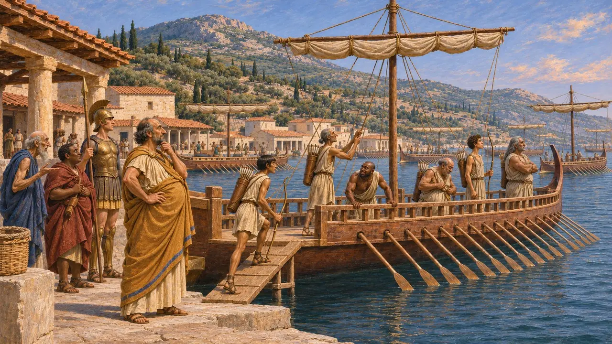
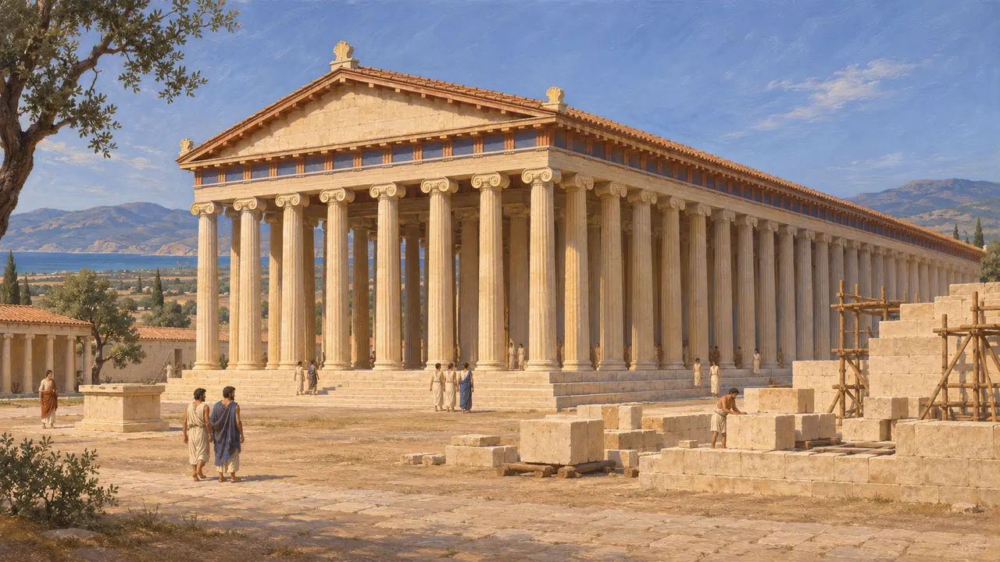
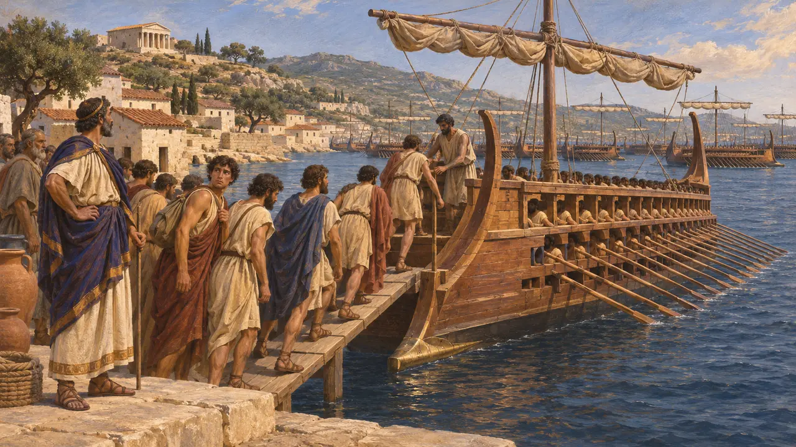
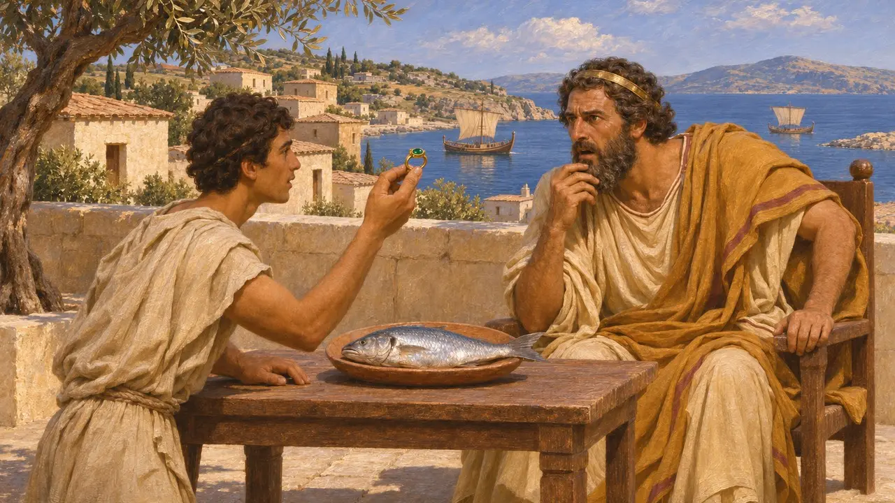

بوليكراتس الساموسي
طاغية ساموس وقوة بحرية في بحر إيجه، القرن السادس ق.م، توفي نحو عام 522 ق.م
جعل بوليكراتس نفسه طاغية على ساموس وبنى أقوى أسطول يوناني في عصره. يقول هيرودوت إنه أرسل أربعين سفينة ثلاثية المجاديف إلى قمبيز من أجل الحملة على مصر، وإن كان مصيرها محل خلاف. ويقول هيرودوت أيضًا إن أورويتس، الحاكم الفارسي في سارديس، استدرجه إلى البر الرئيسي وقتله.
في اللعبة: تذكر اللعبة بوليكراتيس في الحولية وفي مقالات الأحداث فقط، بوصفه من أرسل أربعين سفينة ثلاثية المجاديف إلى مصر. وليس له شخصية أو مبنى أو آلية خاصة به.

طاغية يملك أسطولًا
رواية قديمةيقول هيرودوت إن بوليكراتس استولى على ساموس مع إخوته ثم انفرد بالحكم، وتحالف مع أمازيس ملك مصر، وبنى أسطولًا كبيرًا وجمع عددًا كثيرًا من الرماة. ويذكر ثيوسيديدس كذلك أن بوليكراتس كان يملك قوة بحرية عظيمة وأنه أخضع جزرًا، ويقول إنه أهدى رينيا إلى أبولو في ديلوس. ويُظهر الكاتبان دولة جزيرة يونانية بلغت من القوة ما جعلها ذات شأن عند الفرس.
Herodotus 3.39; Thucydides 1.13; Thucydides 3.104

الأعمال الباقية في ساموس
في السجلاتلا يزال بالإمكان السير في نفق أوبالينوس الذي ينسبه هيرودوت إلى رجل من ميغارا، كما جرت التنقيبات في هيرايون ساموس. وينسب هيرودوت إلى أهل ساموس أيضًا رصيفًا لحماية الميناء وأكبر معبد عرفه. وتدل هذه البقايا على ثراء الجزيرة في القرن السادس، وإن كانت لا تبيّن مقدار ما يعود منها إلى عهد بوليكراتيس نفسه.
Herodotus 3.60; H. Kienast, Die Wasserleitung des Eupalinos auf Samos, 1995

أربعون سفينة ثلاثية المجاديف لقمبيز
متنازع عليهيقول هيرودوت إن قمبيز طلب سفنًا من بوليكراتس، وإن بوليكراتس اختار مواطنين يشك في ولائهم، وأرسل بهم أربعين سفينة ثلاثية المجاديف، وطلب من قمبيز أن يحرص على ألّا يعودوا إلى الوطن أبدًا. ويورد هيرودوت روايتين: في إحداهما عادوا أدراجهم عند كاربثوس، وفي الأخرى بلغوا مصر ونجوا. ويقول إنه لا يقبل ادعاء أهل ساموس بأنهم بلغوا مصر ثم عادوا. لذا يبقى غير مؤكد ما إذا كانت سفن ساموس قد خدمت في مصر.
Herodotus 3.44-45

خاتم بوليكراتيس
أسطورة لاحقةيروي هيرودوت كيف نصح أماسيس بوليكراتس بأن يتخلّص من أعزّ ما يملك لأنه أوفر حظًا مما ينبغي. فألقى بوليكراتس خاتمًا في البحر، ثم عاد إليه في بطن سمكة. عندها أنهى أماسيس التحالف. والقصة حكاية أخلاقية عن إفراط الحظ الحسن، ولا ينبغي أن تُقرأ بوصفها سجلًّا لسبب انتهاء التحالف.
Herodotus 3.40-43
الموت على يد أورويتيس
رواية قديمةيقول هيرودوت إن أوروتيس، الحاكم الفارسي في سارديس، استدرج بوليكراتس إلى البر الرئيسي بوعود الثروة، ثم قتله وصلب جثته. ويعود التاريخ إلى نحو 522 ق.م، في الفترة المضطربة المحيطة بموت قمبيز. ويقول هيرودوت إن ساموس آلت بعد ذلك إلى سيلوسون، أخي بوليكراتس، بعدما استولت قوة فارسية بقيادة أوتانيس على الجزيرة لصالح داريوس.
Herodotus 3.120-125; Herodotus 3.139-149
المصادر
- Herodotus 3.39-45
- Herodotus 3.120-125
- Thucydides 1.13
- Herodotus 3.139-149
- P. Briant, From Cyrus to Alexander, 2002
- H. Kienast, Die Wasserleitung des Eupalinos auf Samos, 1995